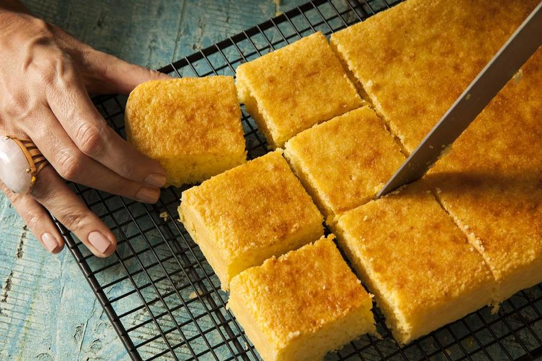

Voltar
Bolo de Milho em Lata
BOLO DE MILHO
Serve 8 porções 60 min.
"A massa não possui glúten e fica fofinha.
É só passar um cafezinho e aproveitar essa delícia."
Ingredientes
- 2 e 1/2 xícaras (chá) de leite
- 2 xícaras (chá) rasas de açúcar
- 2 colheres (sopa) de manteiga
- 2 xícaras (chá) de milho-verde debulhado
- 1 colher (sopa) de amido de milho)
- 3 ovos grandes
- 1 colher de sopa de fermento químico em pó (fermento para bolo)
- Farinha de trigo e manteiga (ou margarina) para untar a assadeira
Modo de Preparo
- No liquidificador, bata o leite com os ovos, a manteiga, o açúcar e o milho até triturar bem.
- Adicione o amido e o fermento e bata somente para misturar.
- Despeje em fôrma retangular (33 x 21 cm) untada com manteiga e polvilhada com amido.
- Leve ao forno médio preaquecido (180 ºC) por cerca de 40 minutos ou até dourar. Deixe amornar e sirva cortado em quadrados.
- Deixe amornar e sirva cortado em quadrados.

Agora é só sevir! Bom apetite